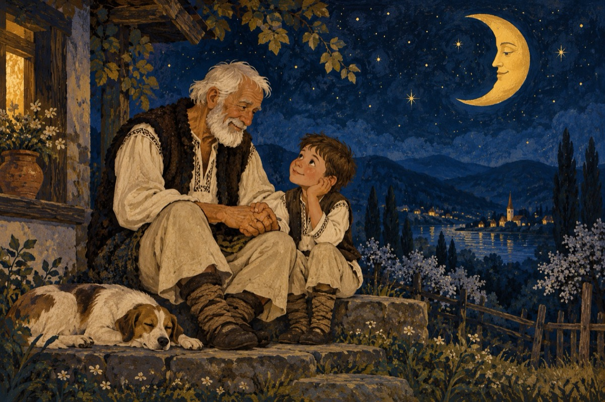

De vorbă
-Bunicule, ție-ți pare rău că-mbătrânești?
Bătrânețea doare?
-Ce-ți veni Daviduț, sunt fenomene firești.
De unde până unde, asemenea-ntrebare?
-Atunci de ce din când în când, te vaiți și oftezi?
Acestea nu sunt vorbe, ci sunt dovezi!
Eu vreau să rămân mereu copil, să nu-mbătrânesc.
Mi se pare firesc!
-Dar și eu am fost copil și la fel mi-am dorit.
Însă viața m-a luat de mână, m-a purtat până am îmbătrânit.
Îți spun însă un secret; și-acum sunt tot copil
Mă simt ca și tine și-s bucuros că sunt util!
-Util, util dar mereu te vaiți de șale!
Când vrei s-alergi nu te-ajută ale tale picioare
-Vorbeam de-un secret, David nepoate!
CREIERUL, a rămas și e capabil în toate.
Cu el alerg, cu el mă joc, cu el mă vindec,
Cu toți copiii dacă e nevoie mă întrec.
Le spun povești și snoave, poezii
Și încă un secret; acest lucru în fiecare zi!
-Da știu, mereu te urmăresc și te citesc
Și-aș vrea ca tine să scriu și să-mbătrânesc!
Îți vând și eu secretul meu și nu glumesc,
Să știi că eu și toți copii te iubesc!
Așa că, atenție la tren!
P.S. - Trenul vine, trenul pleacă,
Obligat, din haltă-n haltă să oprească.
Depinde de und' te urci și unde cobori neapărat.
Odată de l-ai pierdut, fiindcă-ai întârziat
Trenul tău s-a dus și nu-l mai prinzi niciodat'!
Vasile Groza